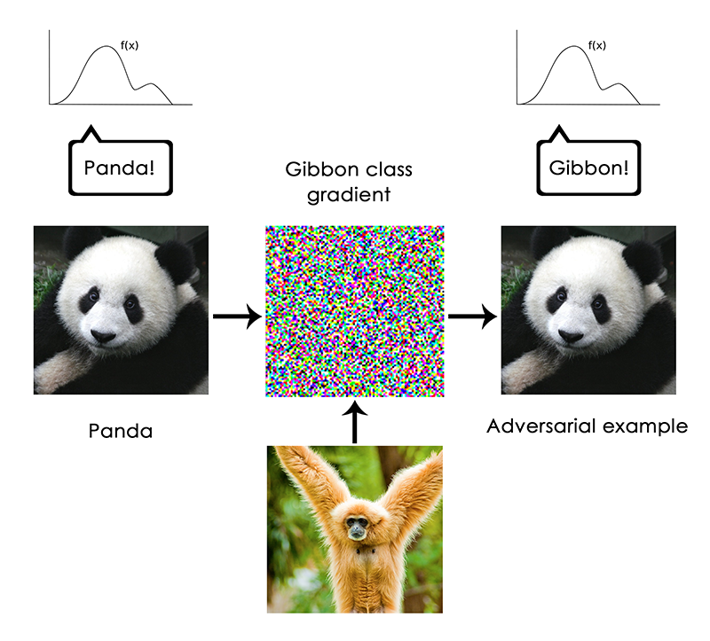
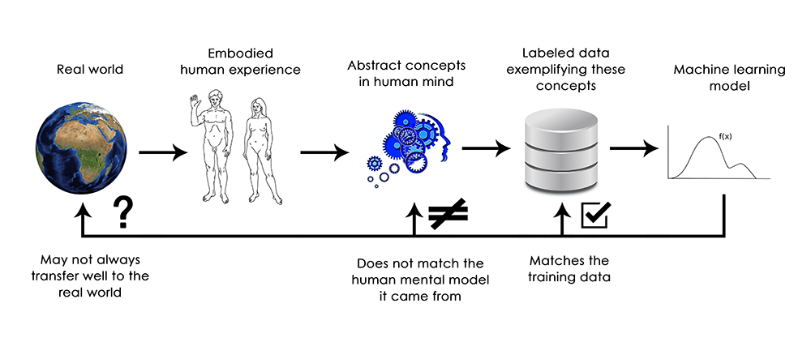
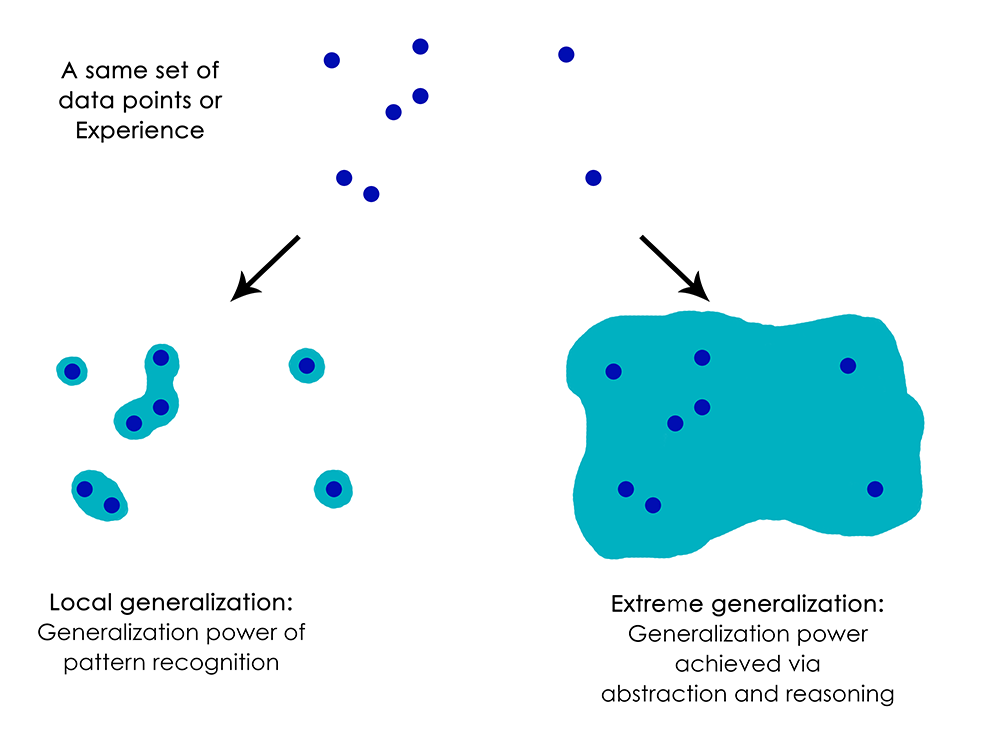

This post is adapted from Section 2 of Chapter 9 of my book, Deep Learning with Python (Manning Publications).
It is part of a series of two posts on the current limitations of deep learning, and its future.
This post is targeted at people who already have significant experience with deep learning (e.g. people who have read chapters 1 through 8 of the book). We assume a lot of pre-existing knowledge.
Deep learning: the geometric view
The most surprising thing about deep learning is how simple it is. Ten years ago, no one expected that we would achieve such amazing results on machine perception problems by using simple parametric models trained with gradient descent. Now, it turns out that all you need is sufficiently large parametric models trained with gradient descent on sufficiently many examples. As Feynman once said about the universe, "It's not complicated, it's just a lot of it".
In deep learning, everything is a vector, i.e. everything is a point in a geometric space. Model inputs (it could be text, images, etc) and targets are first "vectorized", i.e. turned into some initial input vector space and target vector space. Each layer in a deep learning model operates one simple geometric transformation on the data that goes through it. Together, the chain of layers of the model forms one very complex geometric transformation, broken down into a series of simple ones. This complex transformation attempts to maps the input space to the target space, one point at a time. This transformation is parametrized by the weights of the layers, which are iteratively updated based on how well the model is currently performing. A key characteristic of this geometric transformation is that it must be differentiable, which is required in order for us to be able to learn its parameters via gradient descent. Intuitively, this means that the geometric morphing from inputs to outputs must be smooth and continuous—a significant constraint.
The whole process of applying this complex geometric transformation to the input data can be visualized in 3D by imagining a person trying to uncrumple a paper ball: the crumpled paper ball is the manifold of the input data that the model starts with. Each movement operated by the person on the paper ball is similar to a simple geometric transformation operated by one layer. The full uncrumpling gesture sequence is the complex transformation of the entire model. Deep learning models are mathematical machines for uncrumpling complicated manifolds of high-dimensional data.
That's the magic of deep learning: turning meaning into vectors, into geometric spaces, then incrementally learning complex geometric transformations that map one space to another. All you need are spaces of sufficiently high dimensionality in order to capture the full scope of the relationships found in the original data.
The limitations of deep learning
The space of applications that can be implemented with this simple strategy is nearly infinite. And yet, many more applications are completely out of reach for current deep learning techniques—even given vast amounts of human-annotated data. Say, for instance, that you could assemble a dataset of hundreds of thousands—even millions—of English language descriptions of the features of a software product, as written by a product manager, as well as the corresponding source code developed by a team of engineers to meet these requirements. Even with this data, you could not train a deep learning model to simply read a product description and generate the appropriate codebase. That's just one example among many. In general, anything that requires reasoning—like programming, or applying the scientific method—long-term planning, and algorithmic-like data manipulation, is out of reach for deep learning models, no matter how much data you throw at them. Even learning a sorting algorithm with a deep neural network is tremendously difficult.
This is because a deep learning model is "just" a chain of simple, continuous geometric transformations mapping one vector space into another. All it can do is map one data manifold X into another manifold Y, assuming the existence of a learnable continuous transform from X to Y, and the availability of a dense sampling of X:Y to use as training data. So even though a deep learning model can be interpreted as a kind of program, inversely most programs cannot be expressed as deep learning models—for most tasks, either there exists no corresponding practically-sized deep neural network that solves the task, or even if there exists one, it may not be learnable, i.e. the corresponding geometric transform may be far too complex, or there may not be appropriate data available to learn it.
Scaling up current deep learning techniques by stacking more layers and using more training data can only superficially palliate some of these issues. It will not solve the more fundamental problem that deep learning models are very limited in what they can represent, and that most of the programs that one may wish to learn cannot be expressed as a continuous geometric morphing of a data manifold.
The risk of anthropomorphizing machine learning models
One very real risk with contemporary AI is that of misinterpreting what deep learning models do, and overestimating their abilities. A fundamental feature of the human mind is our "theory of mind", our tendency to project intentions, beliefs and knowledge on the things around us. Drawing a smiley face on a rock suddenly makes it "happy"—in our minds. Applied to deep learning, this means that when we are able to somewhat successfully train a model to generate captions to describe pictures, for instance, we are led to believe that the model "understands" the contents of the pictures, as well as the captions it generates. We then proceed to be very surprised when any slight departure from the sort of images present in the training data causes the model to start generating completely absurd captions.
In particular, this is highlighted by "adversarial examples", which are input samples to a deep learning network that are designed to trick the model into misclassifying them. You are already aware that it is possible to do gradient ascent in input space to generate inputs that maximize the activation of some convnet filter, for instance—this was the basis of the filter visualization technique we introduced in Chapter 5 (Note: of Deep Learning with Python), as well as the Deep Dream algorithm from Chapter 8. Similarly, through gradient ascent, one can slightly modify an image in order to maximize the class prediction for a given class. By taking a picture of a panda and adding to it a "gibbon" gradient, we can get a neural network to classify this panda as a gibbon. This evidences both the brittleness of these models, and the deep difference between the input-to-output mapping that they operate and our own human perception.

In short, deep learning models do not have any understanding of their input, at least not in any human sense. Our own understanding of images, sounds, and language, is grounded in our sensorimotor experience as humans—as embodied earthly creatures. Machine learning models have no access to such experiences and thus cannot "understand" their inputs in any human-relatable way. By annotating large numbers of training examples to feed into our models, we get them to learn a geometric transform that maps data to human concepts on this specific set of examples, but this mapping is just a simplistic sketch of the original model in our minds, the one developed from our experience as embodied agents—it is like a dim image in a mirror.

As a machine learning practitioner, always be mindful of this, and never fall into the trap of believing that neural networks understand the task they perform—they don't, at least not in a way that would make sense to us. They were trained on a different, far narrower task than the one we wanted to teach them: that of merely mapping training inputs to training targets, point by point. Show them anything that deviates from their training data, and they will break in the most absurd ways.
Local generalization versus extreme generalization
There just seems to be fundamental differences between the straightforward geometric morphing from input to output that deep learning models do, and the way that humans think and learn. It isn't just the fact that humans learn by themselves from embodied experience instead of being presented with explicit training examples. Aside from the different learning processes, there is a fundamental difference in the nature of the underlying representations.
Humans are capable of far more than mapping immediate stimuli to immediate responses, like a deep net, or maybe an insect, would do. They maintain complex, abstract models of their current situation, of themselves, of other people, and can use these models to anticipate different possible futures and perform long-term planning. They are capable of merging together known concepts to represent something they have never experienced before—like picturing a horse wearing jeans, for instance, or imagining what they would do if they won the lottery. This ability to handle hypotheticals, to expand our mental model space far beyond what we can experience directly, in a word, to perform abstraction and reasoning, is arguably the defining characteristic of human cognition. I call it "extreme generalization": an ability to adapt to novel, never experienced before situations, using very little data or even no new data at all.
This stands in sharp contrast with what deep nets do, which I would call "local generalization": the mapping from inputs to outputs performed by deep nets quickly stops making sense if new inputs differ even slightly from what they saw at training time. Consider, for instance, the problem of learning the appropriate launch parameters to get a rocket to land on the moon. If you were to use a deep net for this task, whether training using supervised learning or reinforcement learning, you would need to feed it with thousands or even millions of launch trials, i.e. you would need to expose it to a dense sampling of the input space, in order to learn a reliable mapping from input space to output space. By contrast, humans can use their power of abstraction to come up with physical models—rocket science—and derive an exact solution that will get the rocket on the moon in just one or few trials. Similarly, if you developed a deep net controlling a human body, and wanted it to learn to safely navigate a city without getting hit by cars, the net would have to die many thousands of times in various situations until it could infer that cars and dangerous, and develop appropriate avoidance behaviors. Dropped into a new city, the net would have to relearn most of what it knows. On the other hand, humans are able to learn safe behaviors without having to die even once—again, thanks to their power of abstract modeling of hypothetical situations.

In short, despite our progress on machine perception, we are still very far from human-level AI: our models can only perform local generalization, adapting to new situations that must stay very close from past data, while human cognition is capable of extreme generalization, quickly adapting to radically novel situations, or planning very for long-term future situations.
Take-aways
Here's what you should remember: the only real success of deep learning so far has been the ability to map space X to space Y using a continuous geometric transform, given large amounts of human-annotated data. Doing this well is a game-changer for essentially every industry, but it is still a very long way from human-level AI.
To lift some of these limitations and start competing with human brains, we need to move away from straightforward input-to-output mappings, and on to reasoning and abstraction. A likely appropriate substrate for abstract modeling of various situations and concepts is that of computer programs. We have said before (Note: in Deep Learning with Python) that machine learning models could be defined as "learnable programs"; currently we can only learn programs that belong to a very narrow and specific subset of all possible programs. But what if we could learn any program, in a modular and reusable way? Let's see in the next post what the road ahead may look like.
You can read the second part here: The future of deep learning.
@fchollet, May 2017